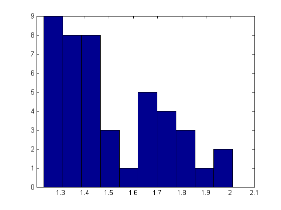

%%显示欧洲各国出生率的柱状图 %clear workspace and command window clear clc %Load the EuropeFertility.mat load EuropeFertility; %Plot the histogram(hist)of the European fertility rates %将EuropeRates里的数据按(最大值-最小值)/10划分为十个矩形 %十个矩形高度表示这个区间内数据出现的次数 hist(EuropeRates)
